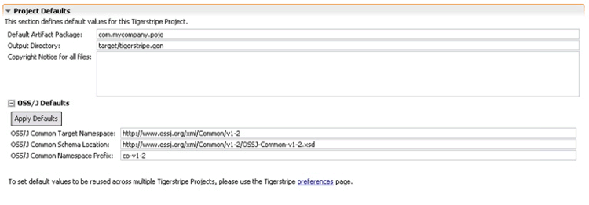

You can customize your generated code in a couple different ways:
For more details about customization of the published website for your Tigerstripe project, refer to Website Publish Customizatin.
Both the XML Integration Profile and the Web Service profile rely on references to external specifications. You can customize the following:
- References to OSS/J Common Schema: all generated XML schemas leverage the XML common schema from OSS/J. By default, all import statements rely on the www.ossj.org web site for their location. You can set these to alternate locations through the Tigerstripe Descriptor, in the Overview tab, in the Project Defaults section:

- References to the WS-Notification Specification: the Web Service Integration Profile relies on the WS-Notification specification. To change the default location of this specification, refer to Web Services Generation Details.
By default, the target generation directory is set to target/tigerstripe.gen. You can change this directory to any location relative to the Project directory, through the Project Descriptor in the Overview tab and the Project Default section (see figure above)
© copyright 2005, 2006, 2007 Cisco Systems, Inc. - All rights reservedYou can generate a custom Copyright statement for all files generated by Tigerstripe by editing the Project Descriptor in the Overview tab and the Project Defaults section (see figure above).